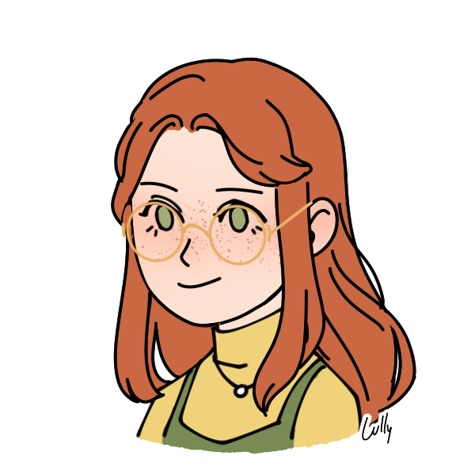

sydney doyle
Hi! I’m a UX writer, LX designer, and knowledge manager.
After finishing my PhD in creative writing and poetry, I took the road less traveled (by poets, at least!) and ventured into the tech world.
Currently, I work as a Customer Education Manager for a SaaS startup, empowering users to solve complex manufacturing problems through no-code app solutions.
My background instills precision, an economy of words, and a deep appreciation for research—skills I now apply to crafting impactful learning experiences and frameworks and processes for information architecture and knowledge management.
